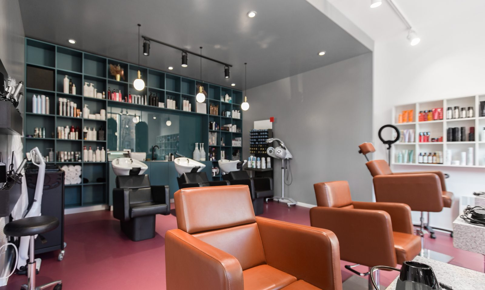

Medizinische Fußpflege
Fachgerechte Pflege für gesunde Füße
Wir behandeln Ihre Füße sorgfältig und hygienisch · von der Befunderhebung bis zur Behandlung. Jede Therapie wird individuell gewählt, denn Kinderfüße brauchen eine andere Behandlung als Füße von Erwachsenen.
BefunderhebungHygieneIndividuellSchonend